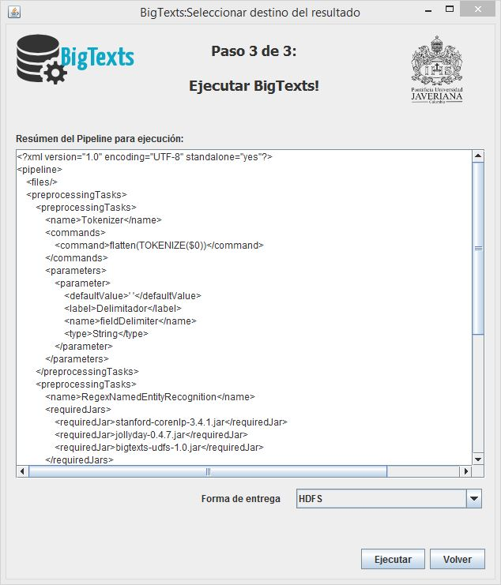

La interfaz gráfica del cliente se divide en 4 pantallas. Una pantalla de bienvenida y 3 pasos para la creación y configuración del pipeline que se desea ejecutar, así:
Home:
Es la pantalla en la cual se le da la bienvenida al usuario y se presentan los datos generales del proyecto.
Paso 1: Cargar documentos:
Pantalla en la que el usuario carga los documentos que desea pre-procesar y los envía al directorio FTP que consulta el servidor de BigTexts.
Paso 2: Seleccionar y configurar tareas de pre-procesamiento:
Pantalla en la que el usuario selecciona y parametriza las tareas de pre-procesamiento que desea aplicarle a los archivos seleccionados en la pantalla anterior.
Paso 3: Seleccionar Destino:
Pantalla que muestra el resúmen del pipeline creado en los pasos anteriores y permite seleccionar el destino (HDFS o FTP) en el cual se desea la entrega del resultado del proceso.

 BigTexts
BigTexts